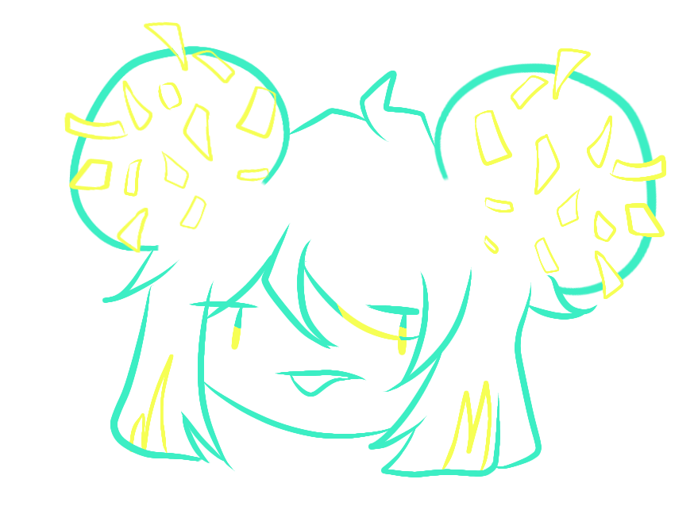
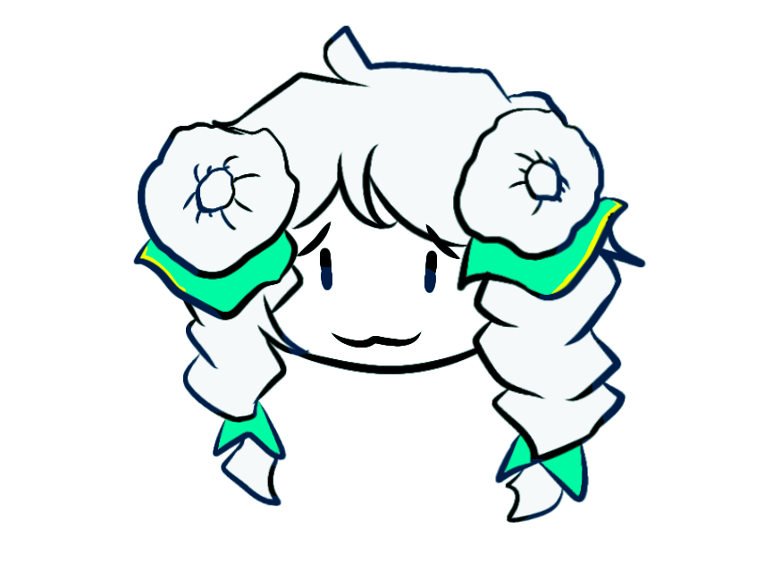
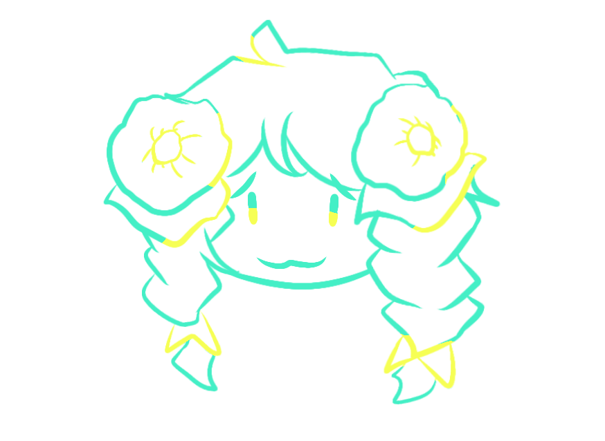
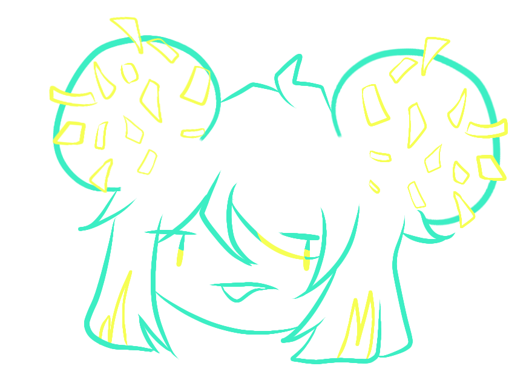
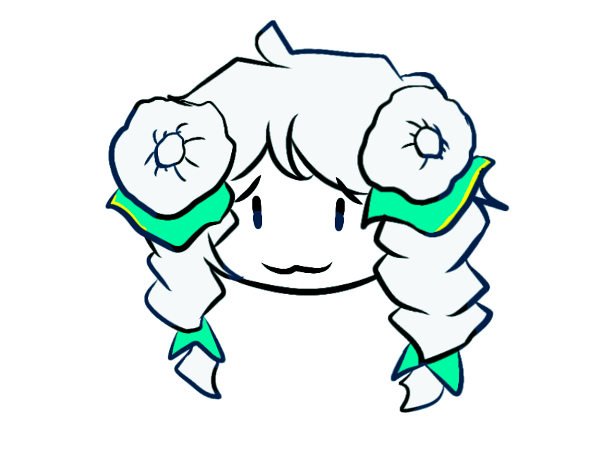
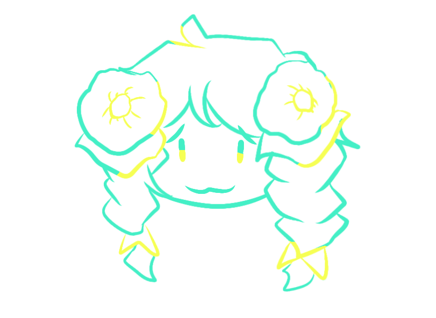

Roles taken in this Project
- Artist
 





What is this project?
I was challenged to turn traditional kueh into my own style with different coloring methods so I chose ondeh ondeh and tutu kueh. I drew the kueh as Hair and drew it in flat colors, two tones and the line art